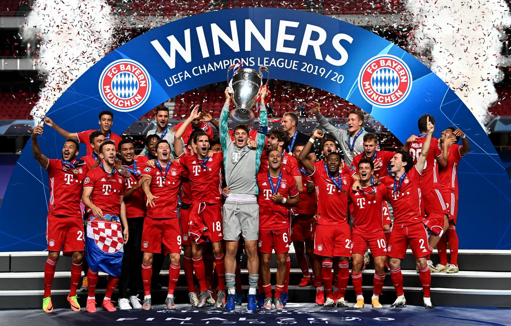

Početna
Tim
Historija
Utakmice
Galerija
FC Bayern München (njemacki: Fußball-Club Bayern München) njemacki je nogometni klub iz bavarskog glavnog grada Münchena. Natjece se u 1. njemackoj Bundesligi, koju je osvojio rekordnih 30 puta, uz jedno prvenstvo Njemacke prije osnivanja Bundeslige, dok je 20 puta osvojio njemacki kup. Bayern je takoder šest puta osvajao naslov prvaka Europe.
Klub je 1900. godine osnovalo jedanaest nogometaša vodenih Franzom Johnom.Iako je Bayern osvojio prvo njemacko nogometno prvenstvo u 1932. godini momcad nije igrala Bundesligu od njezinog pocetka, 1963. godine.Sredinom 1970-ih, klub je imao razdoblje sjajnih uspjeha, kada je poznata momcad predvodena Franzom Beckenbauerom osvojila Kup prvaka tri puta zaredom (od 1974. do 1976.). U godinama koje su slijedile, Bayern je postao najtrofejnija njemacka nogometna momcad. 2013. godine klub je osvojio prvenstvo, kup i Ligu prvaka, a zatim i europski superkup te Svjetsko klupsko prvenstvo.
Od pocetka sezone 2005./06., Bayern domace utakmice igra na Allianz Areni. Prije toga, klub je 33 godine igrao na Olimpijskom stadionu. Glavne su boje momcadi crvena i bijela, a logotip kluba prikazuje boje pokrajine Bavarske.
Danas je Bayern jedan od najpopularnijih nogometnih klubova na svijetu s više od 250 000 clanova. Uz to, postoji više od 3.800 službeno registriranih klubova obožavatelja (fan-clubova) s oko 285 000 clanova.Klub takoder ima momcadi iz razlicitih sportova, kao što su šah, rukomet, košarka, gimnastika, kuglanje, stolni tenis te ostale nogometne momcadi (žene, rezerve, juniori) s više od 1.100 aktivnih clanova.
